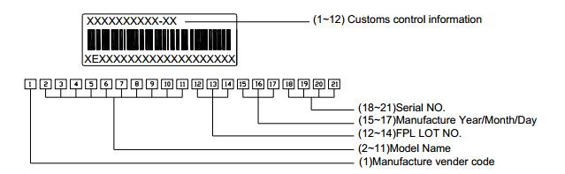
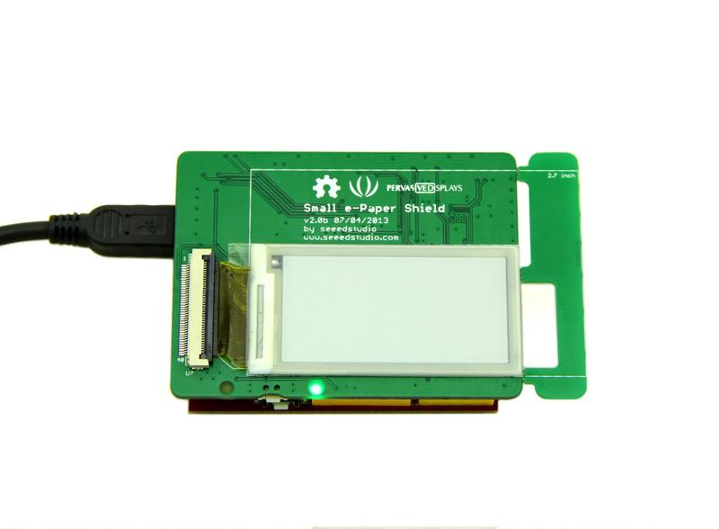
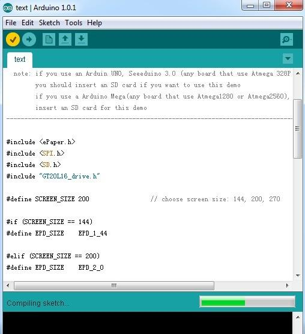
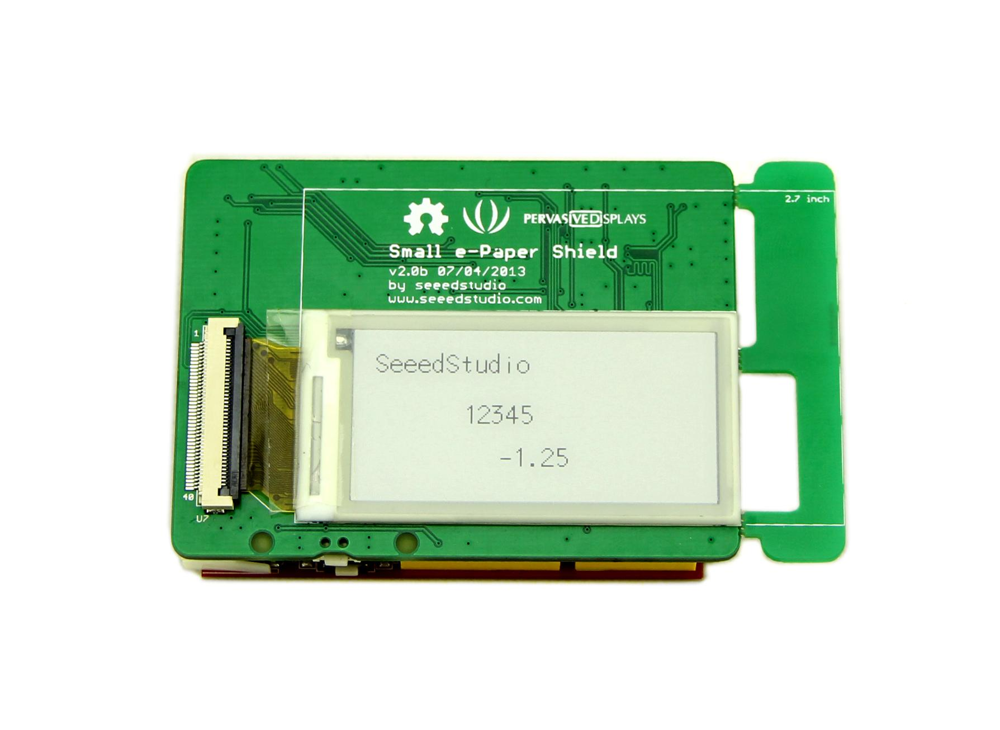
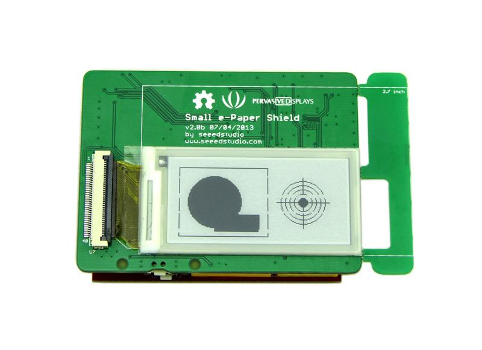
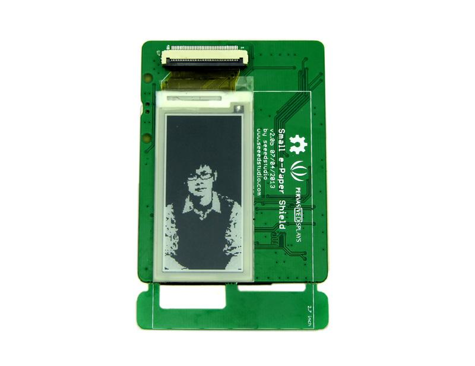
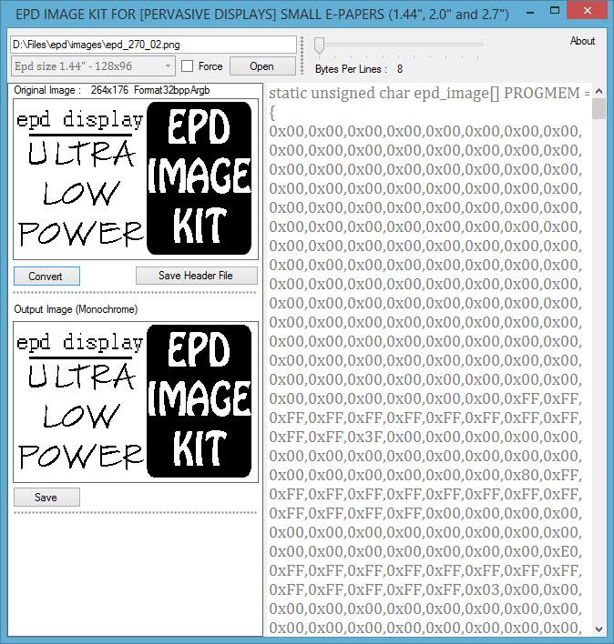

e-Paper might be the most comfortable material to read. It reflects light instead of emitting light to mimic the experience of conventional paper reading. And in this way much less power is consumed. The Small e-paper shield is a driver shield for e-paper of small sizes. It's capable of driving e-papers of 1.44 inch, 2.0 inch and 2.7 inch and supports more than 170 languages. The upper surface of this shield is left flat and clean to give great support to the e-paper attached to it. If you are considering a lightweight and comfortable to read display, e-paper would be a good choice.
Attention: Since this driver board supports e-papers of different sizes. e-paper is not included in this product. We have e-paper of 2.0 inch and 2.7 inch on sale simultaneously. Go and add the most suitable one to your cart now!
Model: SLD00200P
In order to choose the correct library you should know the version of your panel.

Pay attention to your panel's label:
| Arduino | E-paper |
|---|---|
| D2 | M_EPD_PANEL_ON |
| D3 | M_EPD_BORDER |
| D4 | M_/SD_CS |
| D5 | M_EPD_PWM |
| D6 | M_EPD_/RESET |
| D7 | M_EPD_BUSY |
| D8 | M_EPD_DISCHARGE |
| D9 | M_/WORD_STOCK_CS |
| D10 | M_/EPD_CS |
| ICSP PORT | M_MOSI , M_SCK , M_MISO |
| A0 | M_TEMP_SEN |
| A1 | M_OE123 |
| A2 | M_CKV |
| A3 | M_STV_IN |
| 3.3V | M_VCC_3V3 |
| 5V | M_VCC_5V |
Small e-Paper Shield can display image, a variety of graphics and texts. There are plenty of examples in library that give you some ideas on how to use the module. Now let us experience the strong library and wide viewing angle of e-Paper.

Now it is time to show demos using the library which needs download from here. After downloading, you need put it into the library file of Arduino IDE by the path:...\arduino-1.0.1\libraries.
Here we select the 2.0 inch screen as an example to show its display functions.

#define SCREEN_SIZE 200 // choose screen size: 144, 200, 270

The example: draw will be a good example to display a variety of graphics. You need to open this code: draw like demo 1. Remember the note about whether you need a SD card to complete the demo. Please make sure the SD card is needed or not, depending on your microcontroller type. And change the parameter to match your screen size.
After completing modifications and uploading the code, a beautiful pattern will display on the screen:

The picture is created by calling the draw graphic functions. You can make your pattern and try it on the screen. Every draw function has a specific description in the reference.
Similar to TFT displays and OLED displays, the small e-Paper Shield supports displaying images.
Now you need to open the image example: File -> Examples -> ePaper -> image.
You need to upload the code to see the result.

Note：As you can see, the default screen size in this "image" sketch is set as 2.7 inch. Please modify the screen size setting in case of improper display.
#define SCREEN_SIZE 200 // choose screen size here: 144, 200, 270
Of course, you can change the display image by changing the image's lattice data.
For example, if your e-Paper screen is 2.7 inch, you need to provide the lattice data of 264 X 176 pixel and copy the code to ‘’’static unsigned char image_270[] PROGMEM ={}’’’ in picture.h. You need to copy the code for a lattice data of a 200x96 pixel to ‘’’static unsigned char image_200[] PROGMEM ={}’’’ when using a 2.0 inch screen.
Thanks to a contribution by Muchiri John, we got a very useful and easy-to-use tool. With this tool, displaying an image is no longer difficult.
You can download the tool here

Small e-Paper library provides complete software interfaces to exercise the capabilities of e-Paper display. There are specific description about functions.
1. void begin(EPD_size sz);
This function is setup screen size.
2. void setDirection(EPD_DIR dir);
This function is used to set the display direction.
3. int drawChar(char c, int x, int y);
This function can be used to display char.
4. int drawString(char *string, int poX, int poY);
This function can be used to display char.
5. int drawNumber(long long_num,int poX, int poY);
This function can be used to display char.
6. int drawFloat(float floatNumber,int decimal,int poX, int poY);
This function can be used to display float number. The display float data is rounding according to the setting decimal place.
7. int drawUnicode(unsigned int uniCode, int x, int y);
This function can be used to display a Character or a Chinese using unicode. See the page 18 to 24 of the GT20L16P1Y datasheet to find the Char unicode, the characters include Latin、Hebrew、 Thai、Greek、 Kirill and Arabic. The Chinese unicode can see GB2312 (Simplified Chinese) character code table.
Note: the character unicode between 0x0020 to 0x007E can directly input via the keyboard. Such as the display of the character 'G' ,the function can be drawUnicode(0x0047, 3,10) or displayChar ('s',3,10);
8. int drawUnicodeString(unsigned int *uniCode, int len, int x, int y);
This function can be used to display several characters and chinese.
9. void drawLine(int x0, int y0, int x1, int y1);
This function can be used to display a line.
10. void drawCircle(int poX, int poY, int r);
This function can be used to draw a circle.
11. void drawHorizontalLine( int poX, int poY, int len);
This function can be used to draw a horizontal line.
12. void drawVerticalLine( int poX, int poY, int len);
This function can be used to draw a vertical line.
13. void drawRectangle(int poX, int poY, int len, int width);
This function can be used to draw a rectangle.
14. void fillRectangle(int poX, int poY, int len, int width);
This function can be used to draw a fill rectangle.
15. void fillCircle(int poX, int poY, int r);
This function can be used to draw a fill circle.
Example:
EPAPER.drawRectangle(10, 10, 100, 80);
EPAPER.fillCircle(50, 50, 30);
EPAPER.fillRectangle(50, 65, 50, 20);
EPAPER.drawCircle(150, 50, 10);
EPAPER.fillCircle(150, 50, 5);
EPAPER.drawHorizontalLine(120, 50, 60);
EPAPER.drawVerticalLine(150, 20, 60);
16. void drawTraingle( int poX1, int poY1, int poX2, int poY2, int poX3, int poY3);
This function can be used to draw a triangle. It is formed by three points.